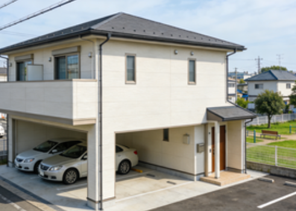

伏見区（Fushimi-ku）賃貸情報
伏見区は京都市南部に位置する行政区で、京都市内で人口が最も多い区。伏見稲荷大社の千本鳥居が世界的に有名で、多くの観光客が訪れる。
深草地区は住宅地が広がり、静かな環境で家族層に人気が高い。伏見桃山地区は酒造りで有名で、日本酒蔵が多く存在する。交通は伏見稲荷駅から京都市中心部へ約20分程度で到着し、通勤通学に便利な立地から多くの人々が居住している。
伏見区の特徴
- 特徴：人口最多区・伏見稲荷大社がある観光地
- メリット：生活施設が整っている・居住性が高い・賃料がリーズナブル
- デメリット：中心部へのアクセスは区内場所により差がある
- 賃料例：1K約61,000円〜、1LDK約85,000円〜、2LDK約120,000円〜
推奨物件タイプ

伏見稲荷駅徒歩8分 1K：約63,000円。木造アパートの物件で、近隣にコンビニと食堂があり生活しやすい。
深草駅周辺 2LDK：約92,000円。低層マンションの物件で、駐車場が付属。学区内に位置し子育てに適している。
宇治川沿い 3LDK：約130,000円。高層マンションの物件で、川の景色を眺望できる。24時間管理体制があり安全性が高い。